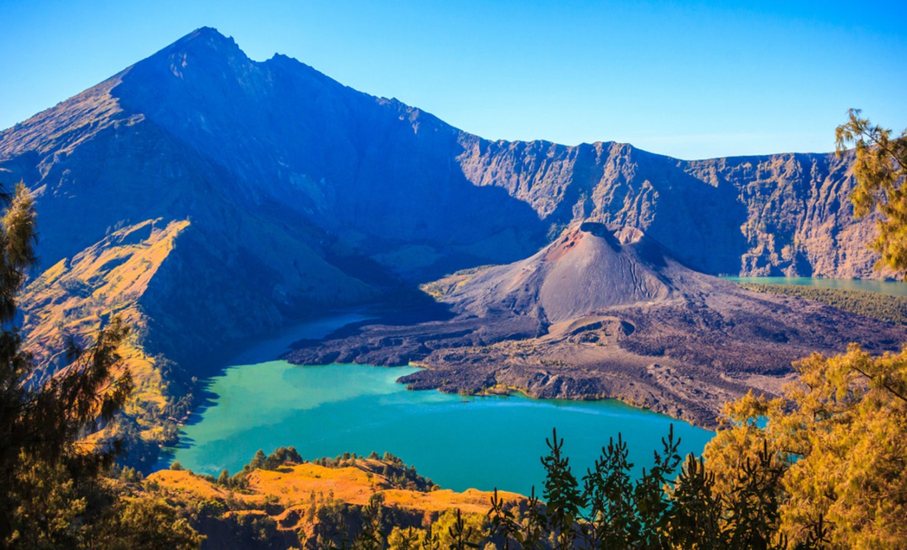
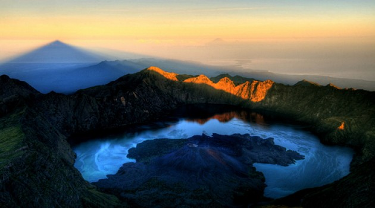

Post by dayat, Sunday 06 Juny 2018
Gunung Rinjani yang berlokasi di Lombok utara tentu sudah tidak asing lagi bagi warga Indonesia. Gunung Rinjani yang mempunyai tinggi lebih dari 3,700 meter di atas permukaan laut adalah gunung berapi tertinggi kedua di Indonesia dan merupakan primadona wisata di Pulau Lombok.
Gunung Rinjani mempunyai pemandangan alam yang paling indah bila dibandingkan dengan gunung lain di Indonesia, bahkan keindahannya disebut-sebut sebagai yang paling indah tidak hanya di Indonesia, melainkan juga di Asia. Karena panorama alamnya yang indah inilah Gunung Rinjani menjadi gunung favorit para pendaki yang biasanya merupakan mahasiswa, pecinta alam, penduduk lokal, hingga wisatawan asing.
Bulan Juli dan bulan Agustus adalah waktu di mana Gunung Rinjani paling banyak dikunjungi wisatawan. Para pendaki gunung ini bertujuan untuk mencapai puncak Gunung Rinjani selain untuk menikmati panoramanya, juga untuk mendapat kepuasan tersendiri karena telah berhasil menaklukan gunung berapi kedua tertinggi di Indonesia ini.
Setiap tahunnya, jumlah pendaki Gunung Rinjani semakin banyak, dan sebagian besar pendaki ini merupakan mahasiswa pecinta alam yang berasal dari berbagai daerah di Indonesia. Hal yang paling suka mereka lakukan adalah merayakan hari kemerdekaan Indonesia di puncak Gunung Rinjani pada bulan Agustus. Namun perlu diingat bahwa pada bulan Agustus sering kali banyak angin kencang di puncak gunung ini.
Selain panorama alam yang tiada duanya, Gunung Rinjani juga mempunyai keunikan lain yaitu flora dan faunanya yang beraneka ragam. Ketika mendaki Gunung Rinjani, anda akan melihat betapa kayanya Gunung Rinjani. Setiap 1,000 meter pendakian anda akan melihat jenis flora yang berbeda, misalnya pada ketinggian 2,000 meter anda akan menemukan banyak cemara gunung, dan pada ketinggian 3,000 meter anda akan melihat banyak bunga edelweiss.
Untuk fauna yang dapat anda temui di antaranya adalah lebih dari 100 jenis burung yang berbeda, landak, rusa, monyet perak, monyet ekor panjang, dan lain-lain. Terkadang binatang yang ada di Gunung Rinjani, terutama monyet ekor panjangnya suka berbuat nakal. Kenakalan monyet tersebut adalah masuk ke dalam tenda pendaki dan mengambil makanan yang ada di dalam tenda.
Sumber : http://anekatempatwisata.com/wisata-lombok-gunung-rinjani/
Bukit Pergasingan
Gili Trawangan
Air Terjun Tiu Kelep
Pantai Pink Lombok
Air Terjun Benang kelambu